| Camada | Recurso / Tecnologia | Finalidade |
|---|---|---|
| Aplicação | Spring Boot 4 (Java 25), Clean Architecture + DDD | API REST stateless com domínio rico (agregado OrdemServico) |
| Segurança | Spring Security + JWT | Autenticação e autorização por perfil (ADMIN, ATENDENTE, MECANICO) |
| Persistência | PostgreSQL 15 + Spring Data JPA | Banco relacional (Deployment + PVC + Secret no cluster) |
| Notificação | Spring Mail + MailHog (SMTP) | E-mail nas transições de status da OS |
| Documentação | Springdoc OpenAPI / Swagger UI | Contrato e exploração dos endpoints |
| Container | Docker + Docker Compose | Imagem multi-stage e ambiente local |
| Orquestração | Kubernetes (kind) + NodePort + HPA | Deploy, exposição (:30080) e escala 1-5 réplicas |
| Infraestrutura | Terraform + metrics-server (Helm) | Provisiona cluster, namespace, banco e métricas |
| CI/CD | GitHub Actions | Build, testes (JUnit/Testcontainers/JaCoCo) e deploy |
A aplicação escala horizontalmente e de forma automática por meio de um
HorizontalPodAutoscaler (HPA) do Kubernetes. Quando cresce o volume de requisições — por exemplo,
abertura simultânea de múltiplas ordens de serviço ou picos de consulta/atualização de status —
o consumo de CPU e memória dos pods aumenta. O metrics-server (provisionado via Terraform) coleta essas
métricas e o HPA cria novas réplicas do pod oficina-api; o Service NodePort distribui
a carga entre as réplicas disponíveis. Quando a carga diminui, o HPA reduz as réplicas de volta ao mínimo.
| Parâmetro do HPA | Valor | Efeito |
|---|---|---|
| minReplicas | 1 | Estado base em carga normal |
| maxReplicas | 5 | Teto de réplicas sob alta carga |
| CPU target | 70% (Utilization) | Gatilho de escala por uso de CPU |
| Memória target | 80% (Utilization) | Gatilho de escala por uso de memória |
| scaleUp | +2 pods / 30s (janela 30s) | Sobe rápido diante de picos de carga |
| scaleDown | -1 pod / 60s (janela 120s) | Desce de forma conservadora, evitando oscilação |
| resources (por pod) | requests 250m CPU / 512Mi — limits 750m CPU / 768Mi | Base de cálculo do percentual de utilização |
Validação: é possível gerar carga com múltiplas
requisições de abertura/consulta de OS e acompanhar o escalonamento com
kubectl -n oficina get hpa -w e kubectl -n oficina get pods -w,
observando o número de réplicas variar entre 1 e 5 conforme a demanda.
